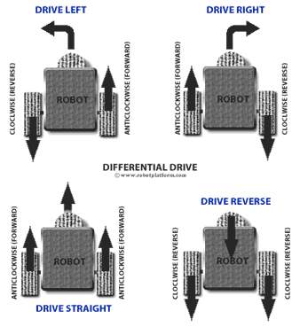
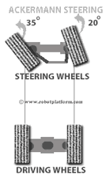
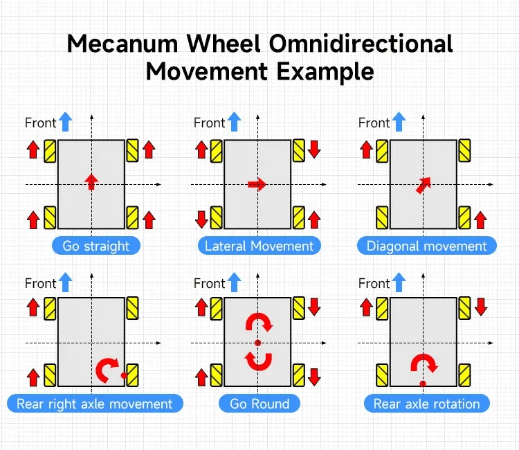

Mechanical Subsystem. Chassis CAD. Suspension Kinematics. Powertrain Sizing.
SolidWorks 2024 modeling, FEA modal vibration simulations, ground clearance airflow, motor torque sizing, and suspension system kinematics.
Mechanical Subsystem Engineering Division
• Hilbert Soh (A0308263H): Section 4 Steering & Drive Architecture Kinematic Analysis, Differential Inverse Kinematics & System Integration
• Asuka (A0308285Y): Section 2 Vacuum Pickup Module & Section 3 Suspension Architecture & Calculations
• Zacarias Ng (A0306899H): Section 1 Chassis Structural Cadence
The UGV chassis serves as the structural foundation housing high-payload batteries, central suction airflow ducts, delicate LiDAR sensors, and 4WD powertrain assemblies.
Chassis Design Iterations
Conceptual Monocoque Box
[To be filled in]
Modular Aluminum Extrusion Frame
[To be filled in]
Hybrid Modular Chassis with Low CG
[To be filled in]
Finite Element Analysis (FEA) Simulation Results
To ensure survivability when traversing runway expansion joints and tarmac irregularities at speeds $\ge 10\text{ km/h}$, SolidWorks FEA static and dynamic load simulations were conducted:
| Load Case / Simulation Condition | Applied Force / Constraint | Maximum Von Mises Stress | Maximum Displacement | Factor of Safety (FOS) |
|---|---|---|---|---|
| Static Gravity Load (1G) | [To be filled in] | [To be filled in] | [To be filled in] | [To be filled in] |
| Dynamic Bump Impact (3G Vertical) | [To be filled in] | [To be filled in] | [To be filled in] | [To be filled in] |
| Torsional Chassis Twist | [To be filled in] | [To be filled in] | [To be filled in] | [To be filled in] |
[To be filled in]
To achieve the operational target of $\ge 10\text{ km/h}$ while climbing runway access ramps and handling full payload mass, powertrain parameters were calculated:
1. Kinematic Velocity & RPM Calculation
Target Velocity: $v = 10\text{ km/h} \approx 2.78\text{ m/s}$
Drive Wheel Radius: $r = 0.10\text{ m}$ ($200\text{ mm}$ all-terrain tire)
Angular Velocity: $\omega = \frac{v}{r} = \frac{2.78}{0.10} = 27.8\text{ rad/s}$
Required Wheel Output Speed = $\approx 265\text{ RPM}$
2. Tractive Force & Torque Budget
Vehicle Gross Mass: $M = 40\text{ kg}$
Ramp Incline Angle: $\theta = 15^\circ$ ($F_{\text{grade}} = M g \sin 15^\circ \approx 101.5\text{ N}$)
Rolling Resistance + Acceleration: $F_{\text{rolling}} + F_{\text{acc}} \approx 28.5\text{ N}$
Total Tractive Force: $F_{\text{total}} \approx 130\text{ N}$
Total Torque $\tau = F \times r = 130 \times 0.10 = 13.0\text{ N}\cdot\text{m}$
3. Selected Motor & Driver Hardware
Hub Motors: Dual ZLLG80ASM25 0-HT V2.0 8-inch high-torque direct-drive hub motors (zero gearbox backlash, >88% efficiency).
Servo Driver: ZLAC8015D V4.2 dual-channel DC brushless servo driver via CAN bus.
Bus Voltage: 48V LiFePO4 bus (up to 800W peak mechanical output).
Suspension & Mounts: Coilover suspension shock absorbers, PETG CF structural brackets, and TPU 98A dampeners.
4.1 Design Decision Framework & Operational Requirements
The steering architecture was not selected solely on manoeuvrability. Each candidate drivetrain was evaluated against the operational requirements of the airside FOD retrieval mission. The autonomous UGV must first traverse relatively long runway sections at a target forward speed of at least $10\text{ km/h}$, then transition to low-speed local manoeuvring when approaching a detected debris coordinate. The chosen drivetrain must therefore support both efficient straight-line transit and precise final positioning of the vacuum intake.
Three candidate architectures were shortlisted for trade-off evaluation: Four-Wheel Differential / Skid Steering, Ackermann Steering, and Mecanum-Wheel Omnidirectional Drive. To ensure an objective and traceable decision process, the candidates were evaluated against seven predefined engineering criteria before making the architectural selection:
| Operational Requirement | Target Metric | Engineering Rationale & Operational Impact |
|---|---|---|
| Forward Traversal Speed | $\ge 10\text{ km/h}$ ($2.78\text{ m/s}$) | Minimises runway runway inspection cycle time to meet airside operational clearance windows between flight slots. |
| Local Turning Envelope | In-place pivot ($R \to 0\text{ m}$) | Enables rapid final repositioning of the vacuum suction hood directly over detected FOD coordinates without multi-point shunting. |
| Outdoor & FOD Tolerance | Debris & grit immune | Airside asphalt contains loose bitumen aggregate, metal shavings, and gravel; drivetrain mechanisms must not jam or ingest particles. |
| Longitudinal & Lateral Traction | $\mu \ge 0.70$ on asphalt | Ensures reliable traction for acceleration, rapid emergency braking, and negotiating $15^\circ$ drainage cross-slopes under wet conditions. |
| Mechanical Simplicity | Minimal linkages | Fewer articulated joints and steering actuators reduces mechanical backlash, maintenance overhead, and failure points under tarmac vibration. |
| Sensor Platform Stability | Low periodic vibration | Minimises high-frequency drivetrain vibration transmission that could corrupt IMU state estimation and degrade 3D LiDAR point cloud SLAM. |
| ROS 2 Nav2 Compatibility | Direct $(v_x, \omega_z)$ mapping | Provides direct mapping from standard Nav2 velocity commands (`cmd_vel`) to wheel velocity setpoints with robust EKF odometry fusion. |
No architecture is optimal across all criteria. Ackermann steering offers efficient pure-rolling motion and excellent high-speed stability but introduces mechanical steering linkages and non-zero minimum turning radius. Mecanum drive provides an additional lateral degree of freedom ($v_y$) attractive for final FOD alignment, but achieves this through mechanically complex peripheral rollers whose durability on grit-laden outdoor pavement presents high reliability risks. Four-wheel skid steering provides a mechanically robust drivetrain and zero-radius turning, but requires lateral tire scrub during pivot maneuvers. Click any candidate card below to inspect its mathematical formulation, kinematics matrix, and detailed trade study:

4WD Differential / Skid-Steer ↗
Independent dual-side velocity control ($v_L, v_R$). True zero-radius rotation ($R=0$) with high tractive torque and zero steering linkage play. Accepted trade-off: lateral tire scrub during pivots.

Ackermann Steering ↗
Pure rolling motion with articulated steering knuckles. High straight-line stability, but theoretical $R_{\text{min}} \ge 0.79\text{ m}$ (swept radius $\ge 1.2\text{ m}$) requires multi-point loops for debris capture.

Mecanum Wheel Drive ↗
$45^\circ$ peripheral sub-rollers enable holonomic translation ($v_y$). Attractive for lateral hood alignment, but exposed roller clearances pose reliability risks on debris-laden tarmac.
| Steering Type | Min. Turning Radius | Speed Requirement ($\ge 10\text{ km/h}$) | Runway Traction & Durability | Mechanical Simplicity | Selection Decision |
|---|---|---|---|---|---|
| 4WD Differential / Skid-Steer | Zero Radius ($R = 0\text{ m}$, in-place pivot) | Met ($v \approx 10\text{--}12\text{ km/h}$ at nominal RPM) | High (Pneumatic rubber on asphalt, $\mu \approx 0.80\text{--}0.85$) | High (Direct-drive hubs, zero tie-rod play) | SELECTED |
| Ackermann Steering | Constrained ($R_{\text{kinematic}} \ge 0.79\text{ m}$, swept $\ge 1.2\text{ m}$) | Met ($v \ge 15\text{ km/h}$, pure rolling) | High (Pure rolling, minimal tire scrub) | Low (Linkages, kingpins, steering servo) | NOT SELECTED |
| Mecanum Drive | Zero Radius ($R = 0\text{ m}$, omnidirectional) | Unmet / High Losses ($v < 6\text{ km/h}$, roller slip) | Poor (Exposed rollers, $\mu_{\text{eff}} \approx 0.35\text{--}0.45$) | Moderate (4 motors, complex multi-roller wheels) | NOT SELECTED |
1. Drivetrain Trade Study & Selection Rationale
- In-Place Pure Pivot ($R = 0$): Eliminates multi-point turning when positioning the suction hood precisely over small debris coordinates ($v_x = 0$, $\omega_z \neq 0$).
- All-Weather Tarmac Traction ($\mu \approx 0.80\text{--}0.85$): High friction coefficient with pneumatic rubber tires on grooved runway asphalt ensures reliable ramp traversal ($15^\circ$) and emergency stopping distances.
- Direct Hub Reliability: Eliminates steering servos, tie-rod linkages, and kingpin bushings that are vulnerable to fatigue and mechanical backlash under runway surface vibration.
- ROS 2 Nav2 Command Integration: Maps directly to ROS 2 Nav2 body-velocity commands $(v_x, \omega_z)$, simplifying translation to left/right wheel velocity setpoints.
Four-wheel skid steering requires lateral tire slip during turning, particularly during zero-radius pivots. This increases turning resistance and causes the physical effective track width $W_{\text{eff}}$ to diverge from the geometric track width. Because precise in-place repositioning is required only during low-speed final FOD approach while runway traversal is predominantly straight-line transit, this limitation was considered acceptable and is managed via $W_{\text{eff}}$ experimental calibration and IMU/LiDAR sensor fusion.
2. Analysis & Limitations of Alternative Candidates
- Ackermann Maneuvering Constraint: While Ackermann steering provides pure rolling with zero tire scrub at high speed, its non-zero minimum turning radius ($R_{\text{min,kinematic}} \approx 0.79\text{ m}$, outer swept radius $\approx 1.2\text{--}1.5\text{ m}$) mandates multi-point shunting maneuvers if a target debris coordinate is overshot.
- Mecanum Lateral Alignment Trade-Off: Mecanum was initially attractive because independent lateral translation ($v_y$) allows the vacuum intake to shift over debris without rotating the chassis. However, the exposed peripheral roller architecture introduces additional interfaces where runway grit and debris fragments may interfere with free roller rotation.
- Vibration Transmission Risk: Discontinuous roller contact transitions in Mecanum wheels generate high-frequency micro-vibrations ($30\text{--}80\text{ Hz}$ under load), which risks degrading IMU acceleration integration and blurring 3D LiDAR point cloud SLAM.
- Effective Traction Degradation: $45^\circ$ vector decomposition reduces effective tractive efficiency ($\mu_{\text{eff}} \approx 0.35\text{--}0.45$), increasing slip and power dissipation on wet or sloped runway asphalt.